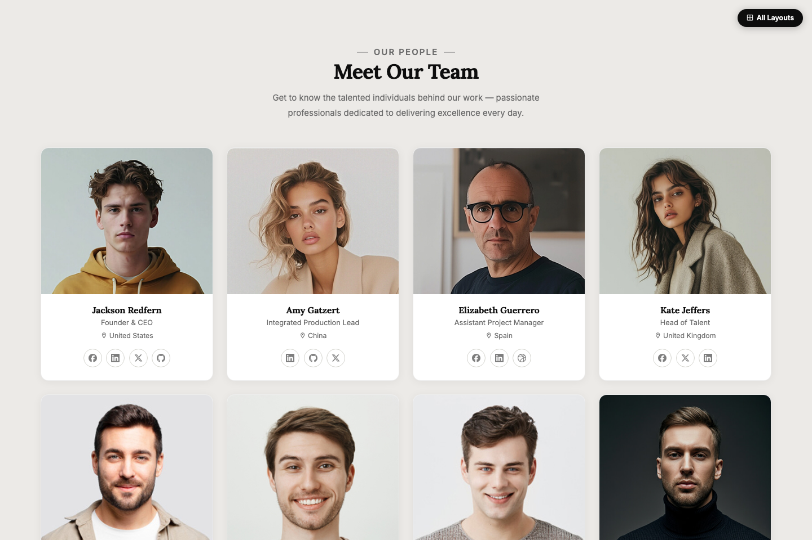
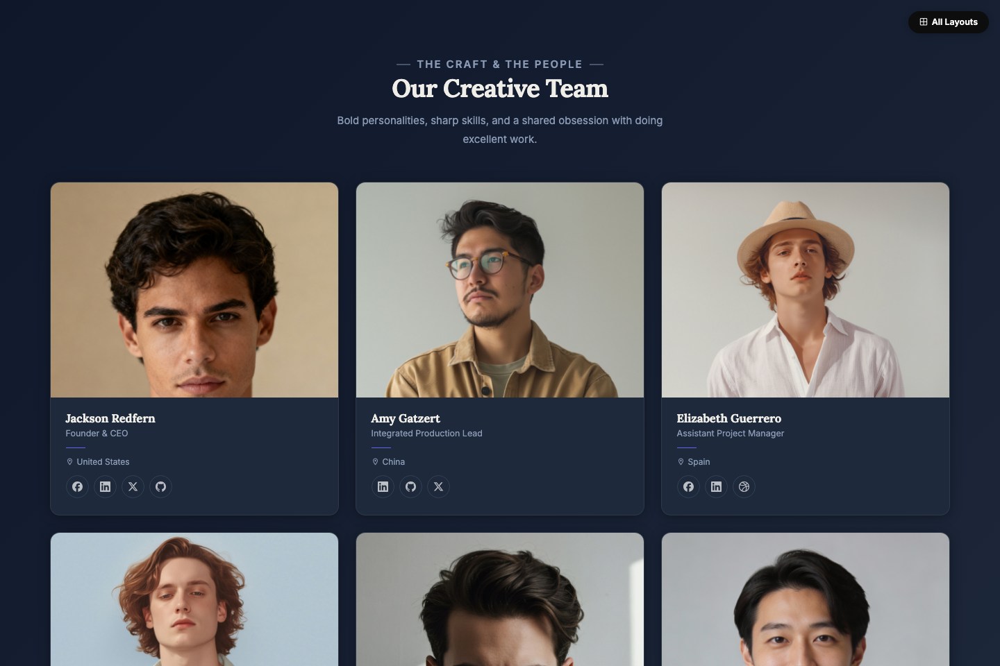
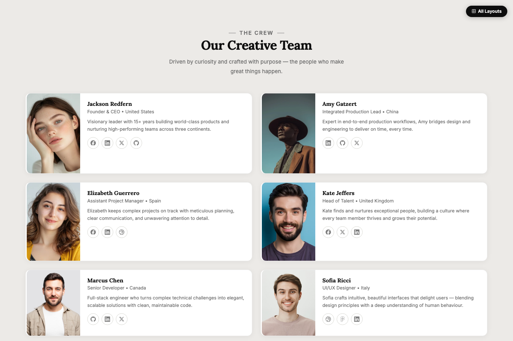
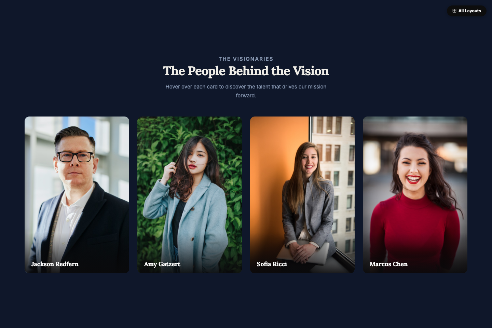
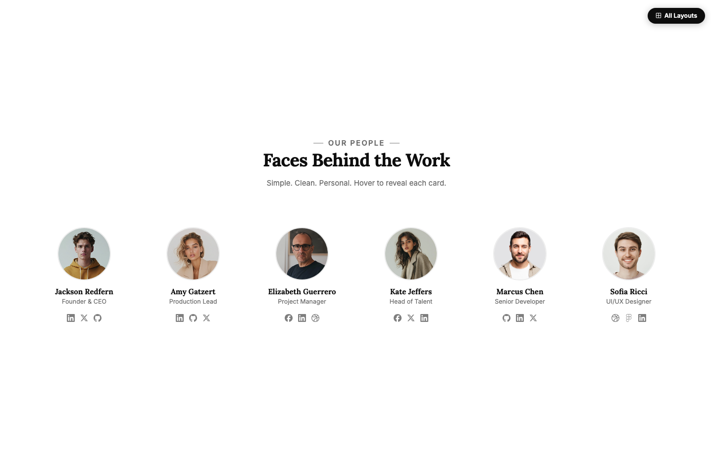
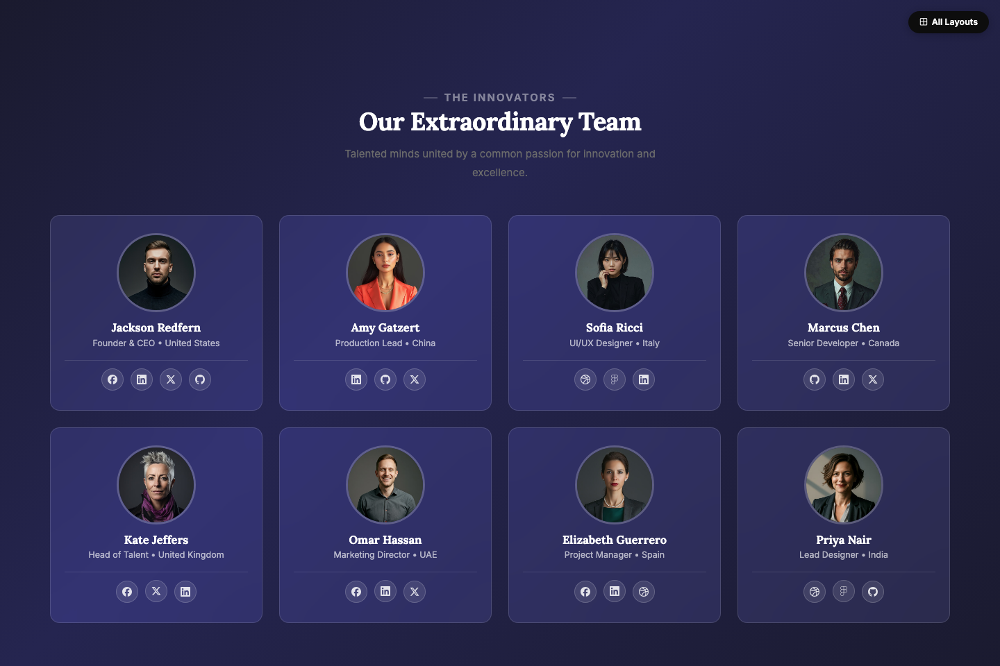
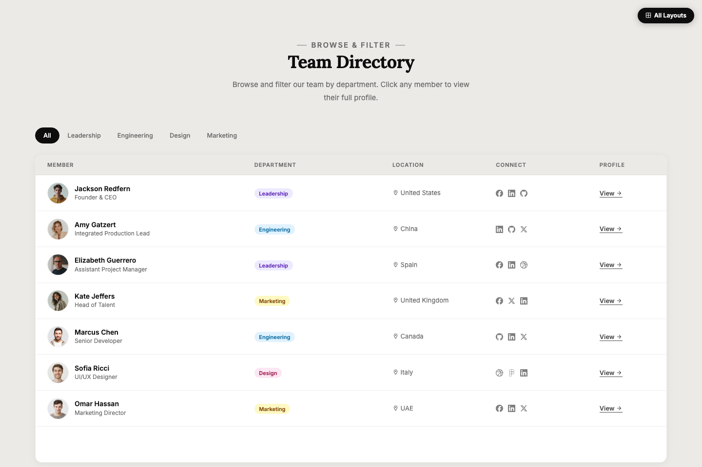
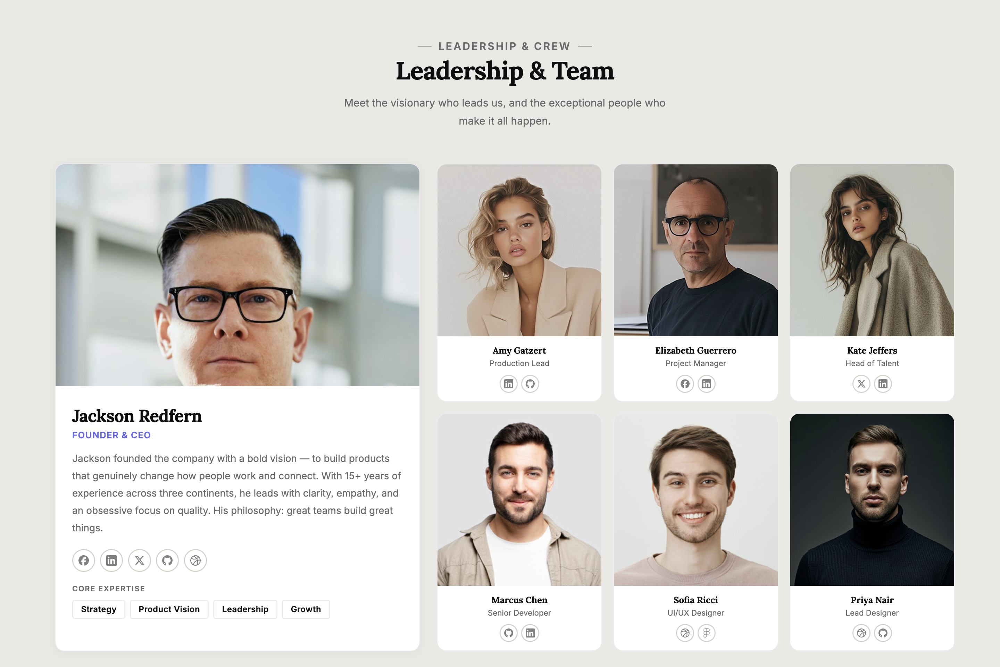
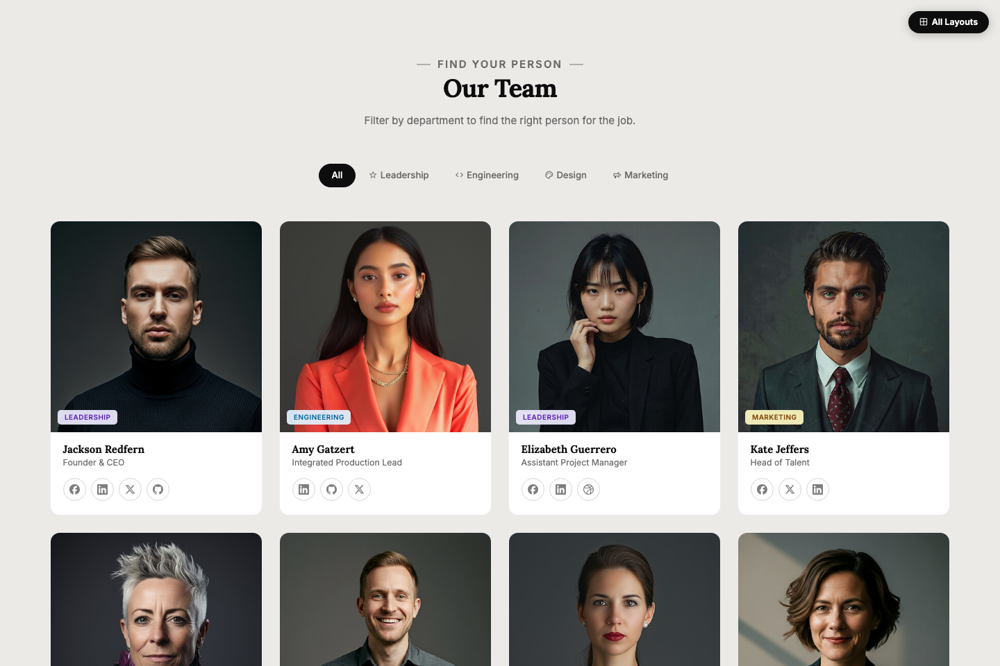

10 professionally designed team card layouts. Pixel-perfect, fully responsive, zero build dependencies. Ready to drop into any project.
Bootstrap 5.3
Latest stable framework, fully utilized
Material Design Icons
7,000+ icons bundled locally
Dark & Light Modes
CSS variable theming system
Interactive Filtering
Department filter with vanilla JS
Every layout is unique — choose the style that fits your project perfectly.

Layout 01
Clean 4-column card grid on a warm neutral background. Ghost social icons, smooth lift-on-hover effect.
Preview
Layout 02
3-column landscape cards on a deep navy background. Left-aligned typography with a signature indigo accent rule on each card.
Preview
Layout 03
Each member as a full-width row with photo on the left and bio text on the right. Accent border slides in on hover.
Preview
Layout 04
Portrait cards where hovering reveals name, role, bio, and social links via a dark overlay that slides up.
Preview
Layout 05
Ultra-minimal ghost layout — circular photos, clean typography, and a floating card that materialises on hover.
Preview
Layout 06
Frosted glass cards floating over a vivid purple gradient. Blur + saturation backdrop filter with a graceful fallback.
Preview
Layout 07
Team directory in a filterable table format. Avatar, name, department badge, socials, and profile link — all in one row.
PreviewLayout 08
Dark mode cards with square-cropped photos. Skill pill badges and experience indicators displayed below each member's social links.
Preview
Layout 09
Asymmetric layout with a large featured leader card on the left and a compact 3-column mini-grid of the team on the right.
Preview
Layout 10
Square-crop cards with coloured department badges pinned over each photo. Filter tabs instantly show only the department you need.
PreviewEverything you need to add a professional team section to any project.